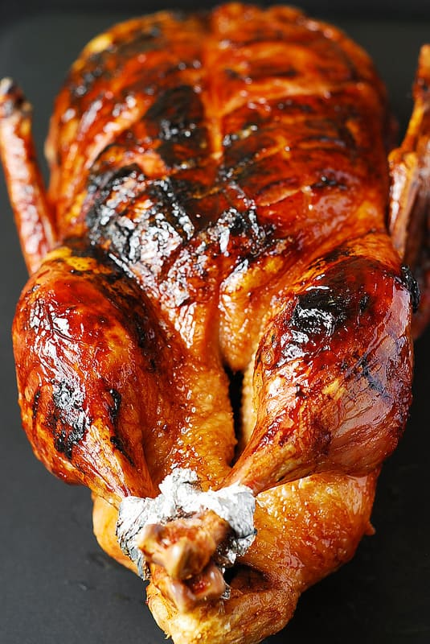

Roast Duck

Description
This Roast Duck recipe delivers tender, juicy meat with crispy skin and a honey-balsamic glaze for a visually stunning finish. Perfect for holidays, it's savory from garlic and lemon stuffing, not overly sweet. Ideal for Thanksgiving, Christmas, or special occasion dinners, despite requiring some effort, the delicious results are worth it.
Ingredients
Roast Duck
- 6 lb whole Pekin duck
- salt
- 5 garlic cloves chopped
- 1 lemon small or medium, chopped
Glaze
- 1/2 cup balsamic vinegar
- 1 lemon, freshly squeezed juice
- 1/4 cup honey
Steps
- If you purchased frozen duck, make sure to defrost the frozen duck in the refrigerator for a couple of days. Once the duck is completely thawed (in the refrigerator), take the duck out of the refrigerator 30 minutes before cooking to bring it more or less to room temperature.
- Preheat oven to 350 degrees Fahrenheit. Prepare a large roasting pan with a rack (the roasting pan should have a roasting rack to lift the duck from the bottom of the pan and allow the fat to drip below the duck).
- Remove the giblets from inside the duck. Rinse the duck, inside and outside, with cold water. Pat dry with paper towels.
- Set the duck on the working surface. Score the duck's skin on the breast in a diamond pattern, ensuring you only cut the skin, without reaching the meat. Poke the other fatty parts of the duck with the tip of the knife all over, to ensure fat release, especially in very fatty parts. You don’t need to poke the duck legs as the skin is pretty thin there (except where the duck legs connect to the duck body). Season the duck generously with salt both inside the duck's cavity and outside on the skin, legs, and all over. Place the duck breast side up.
- Put 5 chopped garlic cloves and lemon slices inside the duck cavity (these are just for flavor, not for eating - you will discard them after cooking). The duck will have flapping skin on both ends - fold that skin inwards, to hold the garlic and lemon inside. Tie up the duck legs with butcher's twine.
- Roast for 40 minutes. Place the bird breast side up on a large roasting pan with a rack (the roasting pan should have a roasting rack to lift the duck from the bottom of the pan and allow the fat to drip below the duck). Roast the duck, uncovered, breast side up, for 40 minutes at 350 F.
- Roast for 20 minutes (or up to 40 minutes). Flip the duck on its breast and roast it breast side down (roast the other side) for 20 more minutes, uncovered, at 350 F. After 20 minutes of roasting, check the duck's internal temperature with an instant meat thermometer. If the temperature reaches 140 F, proceed to the next step. If the meat temperature is below 140 F, roast the duck for 10 or 20 more minutes or until the temperature reaches 140 F.
- Remove duck fat. You now have roasted the duck for 1 hour (or 1 hour 20 minutes total). Remove the roasting pan with the duck from the oven, careful not to spill the juices (fat) in the roasting pan. Carefully remove the duck to a platter (making sure the lemons and garlic from the cavity do not fall out - keep the skin on both ends of the duck folded), and carefully pour off all the duck fat juices from the roasting pan into a large heat-proof bowl or container.
- Make a honey-balsamic glaze and roast for 20 minutes, brushing the duck with the glaze. Flip the duck breast side up again on a rack in a roasting pan (the pan will have no fat juices now). In a small bowl, combine ½ cup of balsamic vinegar + the freshly squeezed juice of 1 lemon + 1/4 cup honey. Brush all of the duck with the balsamic mixture (especially the scored duck breast) and cook the duck breast side up for another 20 minutes at 350 F, brushing every 10 minutes with the mixture. Continue to measure the duck's internal temperature with the meat thermometer.
- Roast for 20 minutes and continue brushing the duck with the glaze. Add more honey to the mixture if it's too thin; it should be relatively thick. Roast the duck for another 20 minutes, brushing the duck breast side every 5 minutes with honey balsamic mixture.
- Broil the duck (optional and if needed). You can carefully broil the duck for about 5 or 10 minutes (check it regularly to ensure it doesn't char too much). Broiling the duck is a great option if the skin is not crispy enough. It will speed up the caramelization of the skin if your duck is already cooked to a desired internal temperature (as measured by a meat thermometer).
- Remove the duck from the oven. Remove the duck from the oven once the internal temperature reaches 155 F (and after you've briefly broiled it if needed). Let it rest, uncovered, on the kitchen counter for about 15 minutes. During this time the duck will continue cooking in residual heat until it reaches 165 F.
- Discard the lemon. Then, carefully remove and discard the lemon from the cavity (being careful not to get burned). Carve the duck and serve!